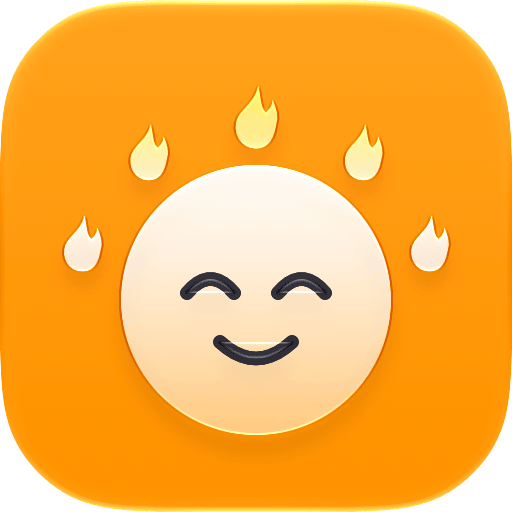
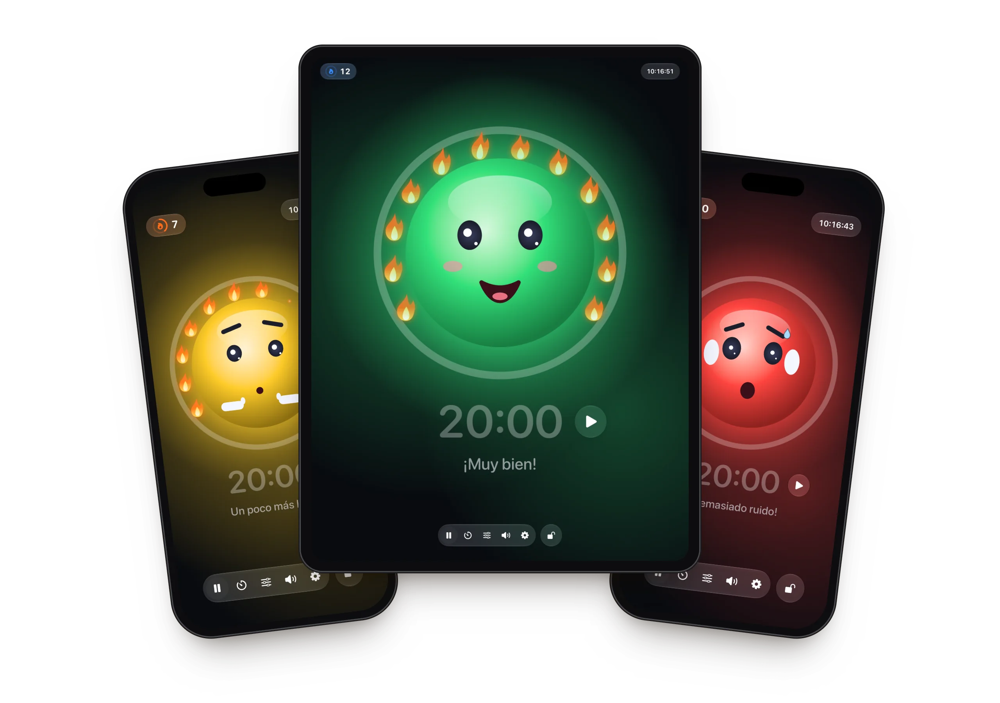
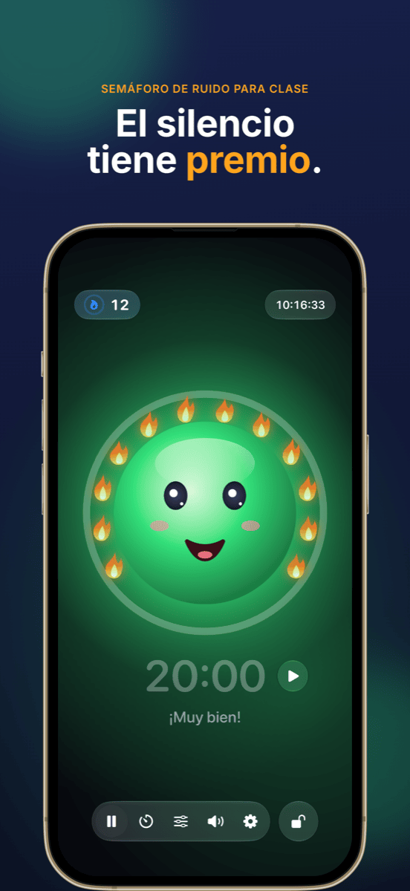
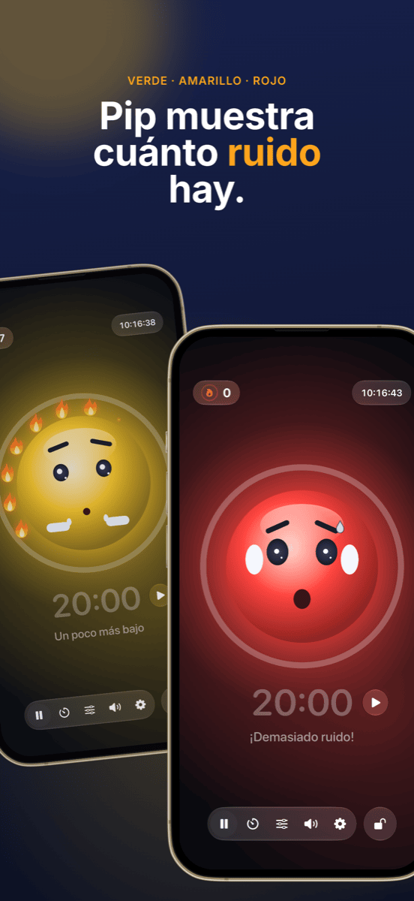
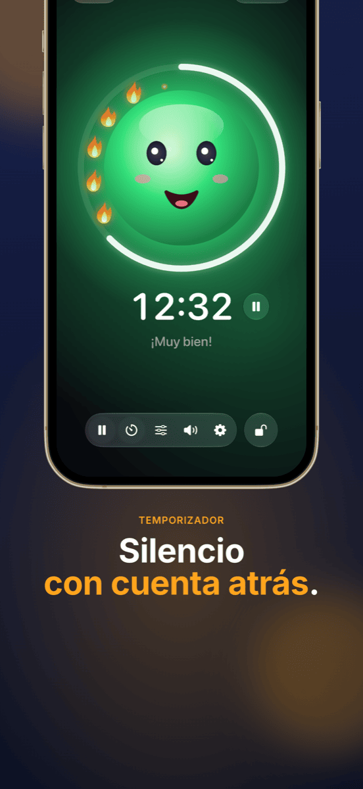
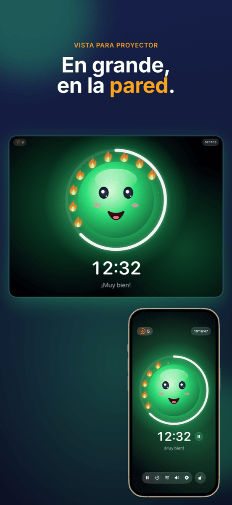
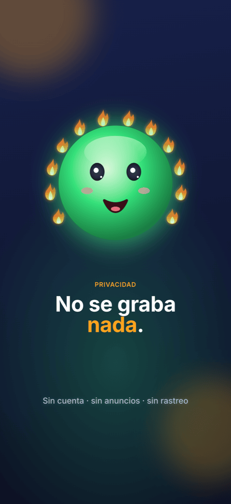

Ruhe
El semáforo de ruido amable para el aula: trabajar en silencio da llamas – el ruido nunca se castiga.






Funciones
Semáforo con mascota
Verde, amarillo, rojo: una cara alegre muestra cuánto ruido hay. En amarillo hace «chis» en voz baja, en rojo se tapa los oídos.
Llamas en lugar de castigos
Mientras hay silencio, se enciende una llama tras otra. Doce llamas forman una corona completa, y eso se celebra. Si hay demasiado ruido, las llamas se apagan.
El temporizador a la vista
El anillo alrededor de la mascota muestra el tiempo restante. Iniciar y parar justo al lado de la hora; al terminar, la medición se pausa.
Vista de proyector
En un proyector o una segunda pantalla, el semáforo aparece a pantalla completa – los controles se quedan en tu iPad.
Para cada clase
Con dos reguladores decides cuándo empiezan el amarillo y el rojo – o Ruhe escucha 5 segundos y se calibra solo.
Bloquear los controles
Bloqueados con Face ID o código, para que nadie de la clase cambie nada.
Cómo funciona
Coloca el iPad
Abre Ruhe y toca la cara: empieza la medición.
Deja trabajar a la clase
La mascota muestra a la clase cuánto ruido hay y reúne llamas por cada rato de silencio.
Mira el resultado
Al final de la clase cuenta lo que ha salido bien: la corona de llamas.
Guía
Ayuda y soporte
Ruhe no mide nada. ¿Qué hago?
Ruhe necesita acceso al micrófono. Permítelo en Ajustes → Privacidad y seguridad → Micrófono → Ruhe.
El semáforo se pone en rojo demasiado pronto o demasiado tarde.
Toca el icono de los reguladores en la barra y mueve los umbrales del amarillo y del rojo – o usa «Ajustar automáticamente» mientras la clase trabaja con normalidad.
¿Cómo muestro Ruhe en el proyector?
Conecta el iPad al proyector por cable o AirPlay. Ruhe muestra allí automáticamente el semáforo a pantalla completa y los controles se quedan en el iPad.
¿Cómo pongo las llamas a cero?
Toca el contador de llamas arriba a la izquierda. Ahí puedes corregir las llamas o ponerlas todas a 0. Si Ruhe ha estado más de 10 minutos en segundo plano, la siguiente clase empieza de todos modos en 0.
¿Se graba algo?
No. Ruhe solo mide el volumen: no se graba, guarda ni envía nada. Tienes los detalles en la política de privacidad.
¿No encuentras tu pregunta?
Escribe a info@crabucate.de; normalmente respondo en uno o dos días.
Silencio que sienta bien.
Para iPad y iPhone – ya en el App Store.